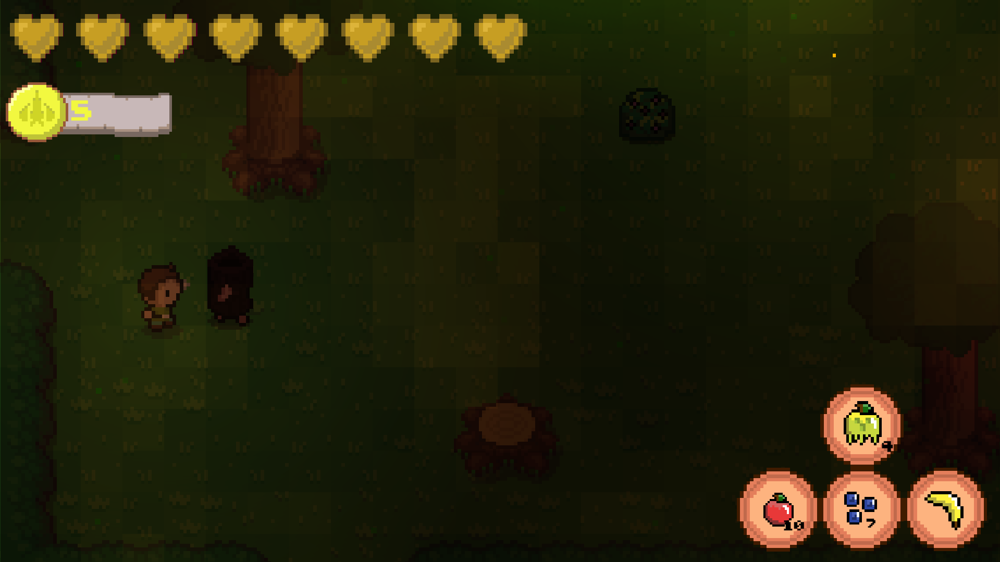
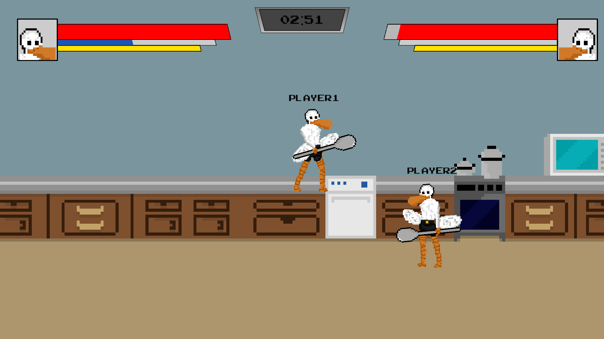
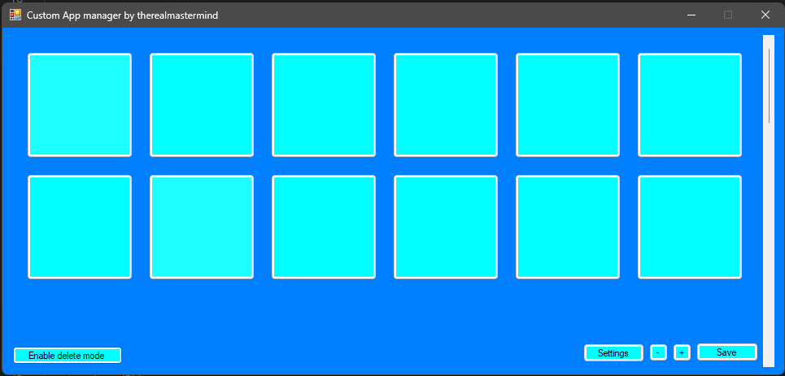

Awaken
A 2D open world action-adventure game in the style of the old Legend of Zelda games. The game is focused around a main character who wakes up in a strange world full of monsters and strange fruits. He must learn the truth of the world before he can escape.

Kitchen Combat
Kitchen Combat was a game created by me and a friend. The game is based on the super smash brothers series. Kitchen Combat features 3 unique playable characters. The game is able to be played here

Custom Application Manager
This custom applicaiton manager was a project that I started to teach myself winforms c# and it rappidly became the most usefull tool I have ever created, this acts as a fast and lightweight application manager that can be used to launch pretty much any application
